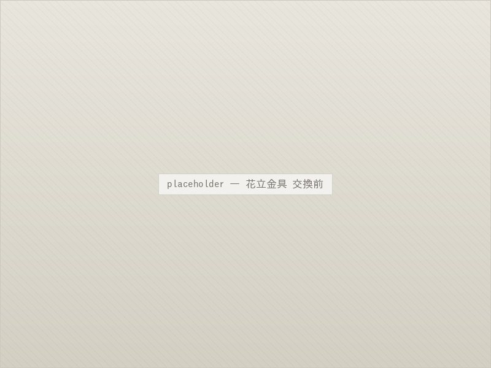
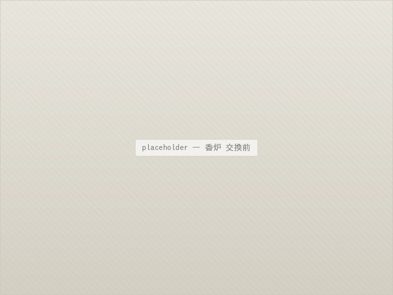
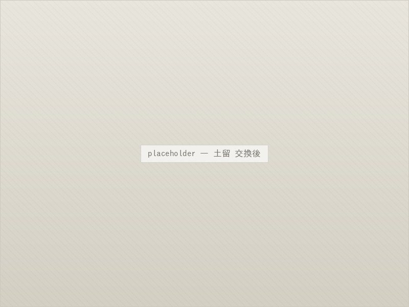
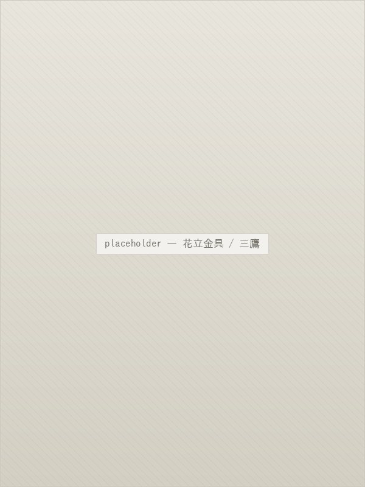
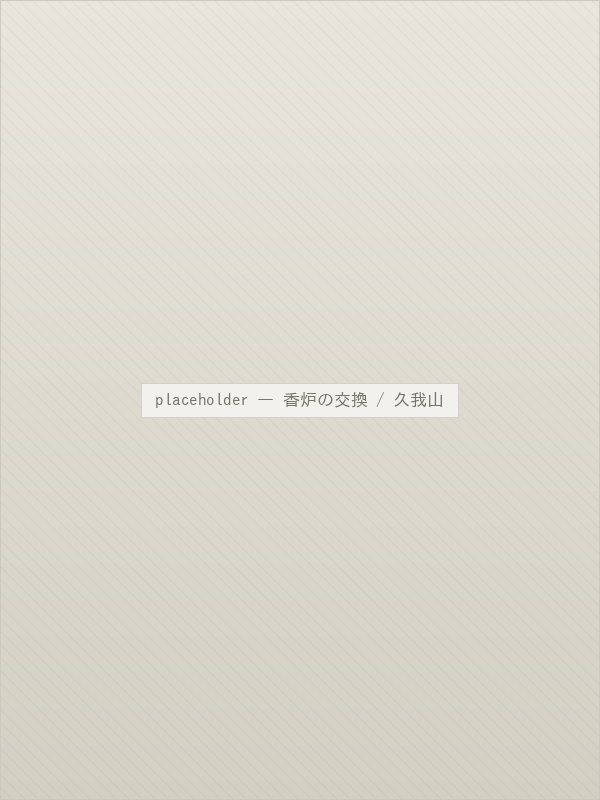
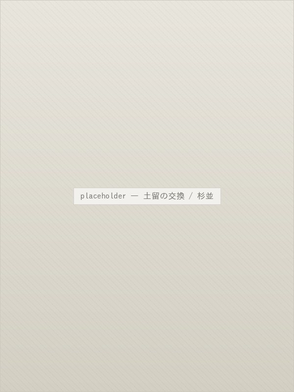
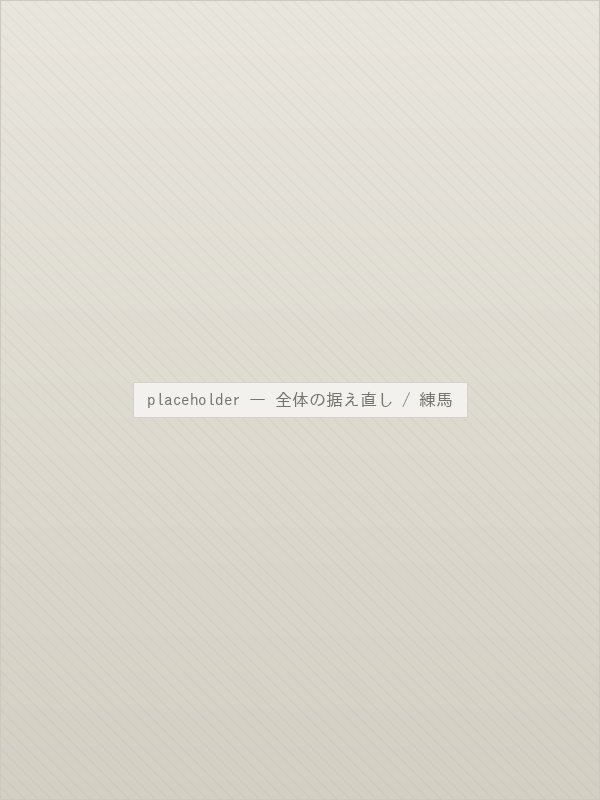

リフォーム
建て替えずに、
傷んだところだけを直す。
— About
こんなときに、
ご相談ください。
お墓は建ててから何十年と使い続けるものですから、部分的な傷みは避けられません。全体を建て替えなくても、傷んだ箇所を交換・修繕することで長く使い続けられます。
- 花立の中の金具が錆びて、水が漏れる／抜けなくなった
- 香炉が欠けている、風で線香の火が消えてしまう
- 土留や外柵が傾いている、隙間が空いてきた
- 目地が切れて、雨水が石のあいだに入り込んでいる
- お墓全体が傾いている、沈んできている
— 01 / Flower Holder
花立金具の交換
花立の中に入っているステンレス製の中筒は、長年の使用で錆びついたり、変形して抜けなくなったりします。
新しい金具に交換することで、お花の水替えがしやすくなり、石の内部に水が溜まって割れる原因も防げます。作業は半日ほどで終わる、もっとも手軽な修繕です。

— 02 / Incense Holder
香炉の交換
欠けたり割れたりした香炉を新しいものに交換します。風で線香の火が消えてしまう場合は、屋根つきの型や、線香を寝かせて置ける型への変更もご提案できます。
お墓全体の石の色に合わせてお選びいたしますので、あとから付け足したようには見えません。

— 03 / Retaining Stone
土留の交換
区画の土を留めている土留（外柵の下の部分）が傾いたり、隙間が空いたりすると、そこから土が流れ出し、お墓全体の沈下につながります。
古い土留を撤去し、新しい石材に入れ替えて据え直します。あわせて地盤を締め固めますので、施工後の安定性も高まります。三つの修繕のなかでは、もっとも工期のかかる工事です。

— 04 / Works
リフォームの施工例

花立金具 / 三鷹01

香炉の交換 / 久我山02

土留の交換 / 杉並03

全体の据え直し / 練馬04